Economic Filters for Business Cycle Analysis
Source:vignettes/economic-filters.Rmd
economic-filters.Rmd
library(trendseries)
library(dplyr)
library(ggplot2)
library(tidyr)
# Load data
data("gdp_construction", "ibcbr", "vehicles", package = "trendseries")Introduction
Economic filters are specialized methods designed for business cycle analysis - extracting trends and measuring cyclical fluctuations in macroeconomic data. Unlike simple moving averages, these methods are based on economic theory about how business cycles behave.
This vignette covers the most important economic filters:
- Hodrick-Prescott (HP) filter: The standard in macroeconomics
- Baxter-King (BK) filter: Isolates specific business cycle frequencies
- Christiano-Fitzgerald (CF) filter: Asymmetric bandpass filter
- Hamilton filter: Recent alternative to HP filter
When to Use Economic Filters
Use economic filters when: - Analyzing GDP, industrial production, or other macroeconomic aggregates - Measuring business cycles and output gaps - Decomposing series into trend and cycle components - Following standard economic research practices
These are less suitable for: - High-frequency financial data (use EWMA or other methods) - Data with irregular patterns - Short time series (need at least 30-40 observations)
The Hodrick-Prescott Filter: The Standard Approach
The HP filter is the most widely used method in macroeconomics. It finds a smooth trend by minimizing both the fit to the data and the variability of the trend.
Basic Example with Quarterly Data
Let’s start with quarterly GDP construction data:
# Apply HP filter to quarterly data
gdp_hp <- gdp_construction |>
augment_trends(
value_col = "gdp_construction",
methods = "hp"
)
# View results
head(gdp_hp)
#> # A tibble: 6 × 3
#> date gdp_construction trend_hp
#> <date> <dbl> <dbl>
#> 1 1995-01-01 100 101.
#> 2 1995-04-01 100 101.
#> 3 1995-07-01 100 102.
#> 4 1995-10-01 100 103.
#> 5 1996-01-01 97.8 103.
#> 6 1996-04-01 101. 104.Now visualize the trend and the cyclical component (gap):
# Calculate the cycle (deviation from trend)
gdp_hp <- gdp_hp |>
mutate(cycle = gdp_construction - trend_hp)
# Plot 1: Trend vs Original
p1 <- gdp_hp |>
select(date, gdp_construction, trend_hp) |>
pivot_longer(cols = c(gdp_construction, trend_hp), names_to = "series") |>
mutate(series = ifelse(series == "gdp_construction", "Original", "HP Trend")) |>
ggplot(aes(x = date, y = value, color = series)) +
geom_line(linewidth = 0.9) +
labs(
title = "GDP Construction: Original vs HP Trend",
subtitle = "Quarterly data with standard HP filter (λ=1600)",
x = NULL,
y = "Index",
color = NULL
) +
theme_minimal() +
theme(legend.position = "bottom")
# Plot 2: Cyclical component
p2 <- gdp_hp |>
ggplot(aes(x = date, y = cycle)) +
geom_hline(yintercept = 0, linetype = "dashed", color = "gray50") +
geom_line(linewidth = 0.9, color = "#0072B2") +
labs(
title = "Cyclical Component (Output Gap)",
subtitle = "Deviations from HP trend",
x = "Date",
y = "Gap (index points)",
color = NULL
) +
theme_minimal()
print(p1)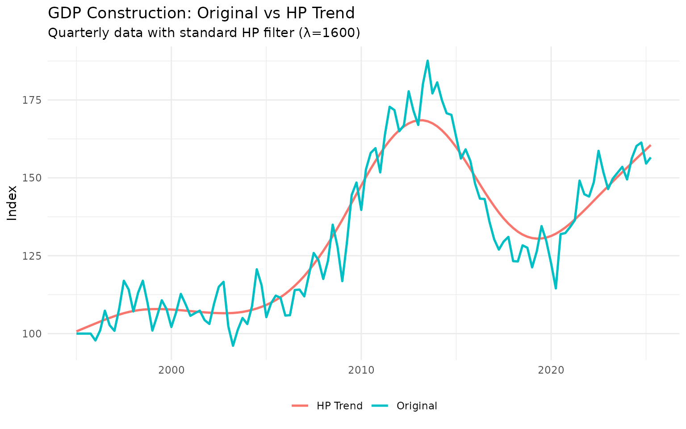
print(p2)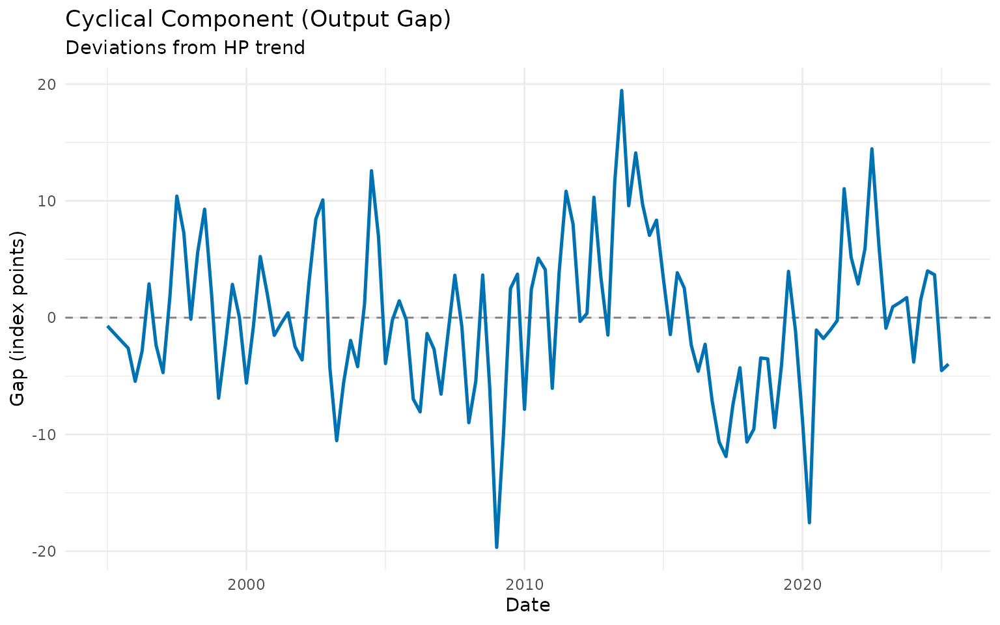
The cyclical component shows periods when the construction sector was above trend (booms) and below trend (recessions).
The Lambda Parameter
The HP filter has one key parameter: lambda (λ), which controls smoothness:
- Higher λ: Smoother trend, captures only long-term movements
- Lower λ: More flexible trend, follows data more closely
Standard values: - Quarterly data: λ = 1600 (Hodrick-Prescott’s original recommendation) - Monthly data: λ = 14400 (adjusted for frequency) - Annual data: λ = 100
Let’s see the effect of different lambda values:
# Test different lambda values on quarterly data
lambdas <- c(400, 1600, 6400)
gdp_lambdas <- gdp_construction
for (lambda in lambdas) {
temp <- gdp_construction |>
augment_trends(
value_col = "gdp_construction",
methods = "hp",
smoothing = lambda
) |>
select(trend_hp)
names(temp) <- paste0("hp_", lambda)
gdp_lambdas <- bind_cols(gdp_lambdas, temp)
}
# Plot
gdp_lambdas |>
select(date, gdp_construction, starts_with("hp_")) |>
pivot_longer(
cols = c(gdp_construction, starts_with("hp_")),
names_to = "method",
values_to = "value"
) |>
mutate(
method = case_when(
method == "gdp_construction" ~ "Original",
method == "hp_400" ~ "λ = 400 (flexible)",
method == "hp_1600" ~ "λ = 1600 (standard)",
method == "hp_6400" ~ "λ = 6400 (very smooth)"
)
) |>
ggplot(aes(x = date, y = value, color = method)) +
geom_line(linewidth = 0.8) +
labs(
title = "HP Filter with Different Lambda Values",
subtitle = "Quarterly GDP construction data",
x = "Date",
y = "Index",
color = NULL
) +
theme_minimal() +
theme(legend.position = "bottom")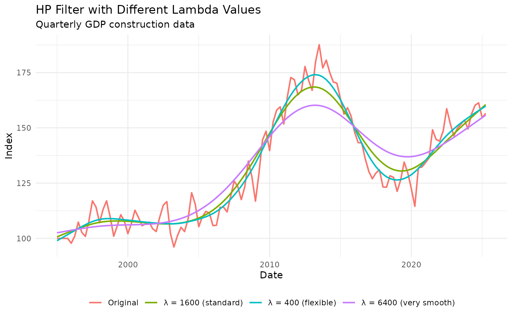
Recommendation: Use the standard values (1600 for quarterly, 14400 for monthly) unless you have a specific reason to change them.
HP Filter on Monthly Data
The HP filter works exactly the same way on monthly data, but uses a different default lambda:
# Apply HP filter to monthly IBC-Br data
ibcbr_hp <- ibcbr |>
slice_tail(n = 120) |> # Last 10 years
augment_trends(
value_col = "ibcbr",
methods = "hp"
) |>
mutate(cycle = ibcbr - trend_hp)
# Plot trend and cycle
p1 <- ibcbr_hp |>
select(date, ibcbr, trend_hp) |>
pivot_longer(cols = c(ibcbr, trend_hp), names_to = "series") |>
mutate(series = ifelse(series == "ibcbr", "Original", "HP Trend")) |>
ggplot(aes(x = date, y = value, color = series)) +
geom_line(linewidth = 0.8) +
labs(
title = "IBC-Br Economic Activity: HP Trend",
subtitle = "Monthly data with λ=14400",
x = NULL,
y = "Index",
color = NULL
) +
theme_minimal() +
theme(legend.position = "bottom")
p2 <- ibcbr_hp |>
ggplot(aes(x = date, y = cycle)) +
geom_hline(yintercept = 0, linetype = "dashed", color = "gray50") +
geom_line(linewidth = 0.8, color = "#0072B2") +
geom_ribbon(aes(ymin = pmin(cycle, 0), ymax = 0), alpha = 0.3, fill = "#D55E00") +
geom_ribbon(aes(ymin = 0, ymax = pmax(cycle, 0)), alpha = 0.3, fill = "#009E73") +
labs(
title = "Business Cycle Component",
subtitle = "Green = above trend (expansion), Red = below trend (contraction)",
x = "Date",
y = "Gap (index points)"
) +
theme_minimal()
print(p1)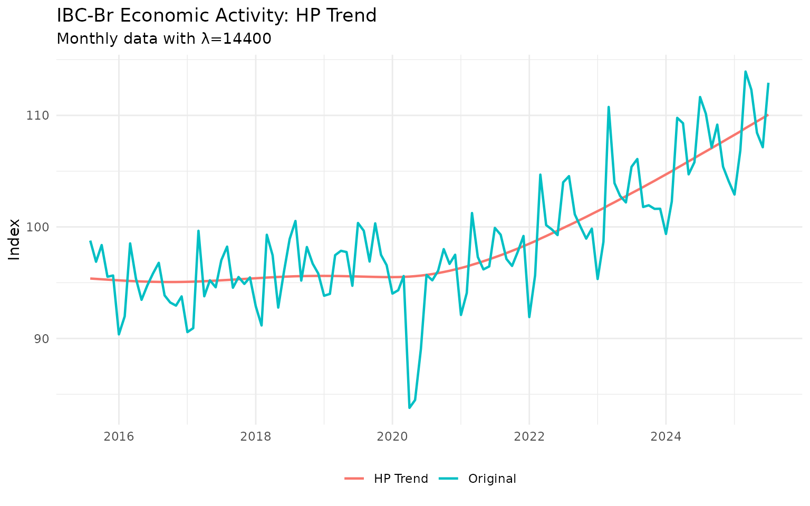
print(p2)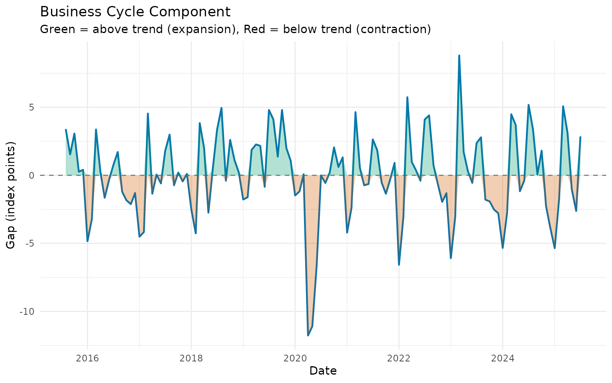
The cyclical component clearly shows the economic contraction during the pandemic and subsequent recovery.
Bandpass Filters: Isolating Business Cycles
While the HP filter separates trend from cycle, bandpass filters specifically isolate fluctuations within a certain frequency range. This is useful when you want to focus on “true” business cycles (typically 6-32 quarters or 1.5-8 years).
Baxter-King Filter
The BK filter isolates fluctuations between a lower and upper period bound:
# Apply BK filter to quarterly GDP data
# Isolate cycles between 6 and 32 quarters (standard business cycle range)
gdp_bk <- gdp_construction |>
augment_trends(
value_col = "gdp_construction",
methods = "bk",
band = c(6, 32) # Business cycle frequencies
)
# The BK filter returns the cycle, not the trend
# So we need to calculate the trend as: trend = original - cycle
gdp_bk <- gdp_bk |>
mutate(
cycle_bk = trend_bk, # Rename for clarity
trend_bk_calc = gdp_construction - cycle_bk
)
# Plot the cycle
gdp_bk |>
filter(!is.na(cycle_bk)) |> # BK loses observations at edges
ggplot(aes(x = date, y = cycle_bk)) +
geom_hline(yintercept = 0, linetype = "dashed", color = "gray50") +
geom_line(linewidth = 0.9, color = "#0072B2") +
geom_ribbon(aes(ymin = pmin(cycle_bk, 0), ymax = 0), alpha = 0.3, fill = "#D55E00") +
geom_ribbon(aes(ymin = 0, ymax = pmax(cycle_bk, 0)), alpha = 0.3, fill = "#009E73") +
labs(
title = "Baxter-King Business Cycle",
subtitle = "Isolates fluctuations between 6-32 quarters",
x = "Date",
y = "Cycle (index points)"
) +
theme_minimal()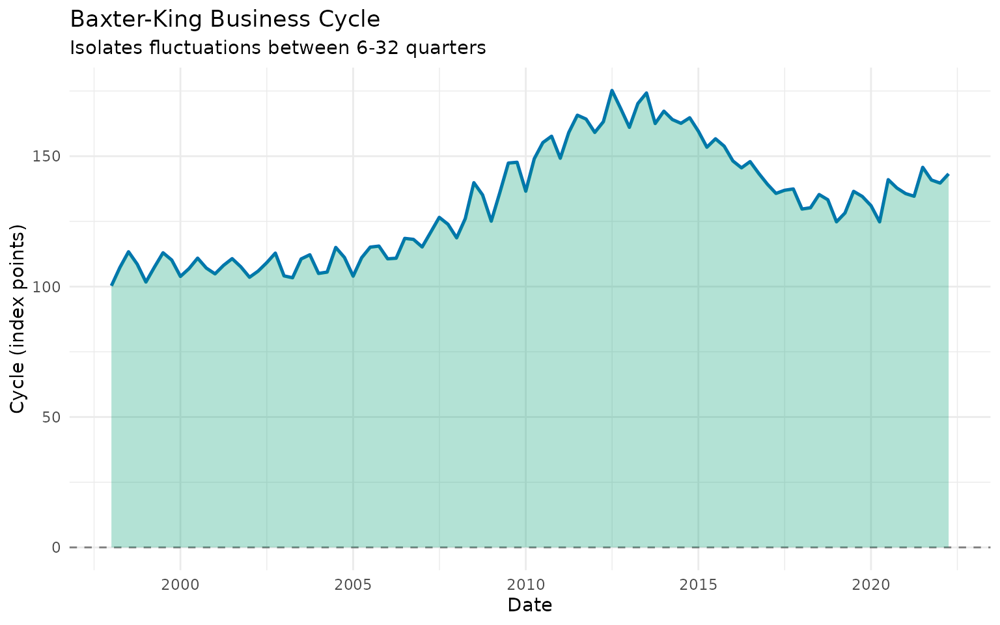
Note: The BK filter loses observations at the beginning and end of the sample. This is the price for isolating specific frequencies.
Christiano-Fitzgerald Filter
The CF filter is similar to BK but uses all available data more efficiently (asymmetric filter):
# Apply CF filter
gdp_cf <- gdp_construction |>
augment_trends(
value_col = "gdp_construction",
methods = "cf",
band = c(6, 32)
) |>
mutate(
cycle_cf = trend_cf,
trend_cf_calc = gdp_construction - cycle_cf
)
# Compare BK and CF cycles
comparison <- bind_rows(
gdp_bk |>
select(date, cycle = cycle_bk) |>
mutate(method = "Baxter-King"),
gdp_cf |>
select(date, cycle = cycle_cf) |>
mutate(method = "Christiano-Fitzgerald")
)
comparison |>
filter(!is.na(cycle)) |>
ggplot(aes(x = date, y = cycle, color = method)) +
geom_hline(yintercept = 0, linetype = "dashed", color = "gray50") +
geom_line(linewidth = 0.9) +
labs(
title = "Comparing BK and CF Filters",
subtitle = "Both isolate 6-32 quarter business cycles",
x = "Date",
y = "Cycle (index points)",
color = "Method"
) +
theme_minimal() +
theme(legend.position = "bottom")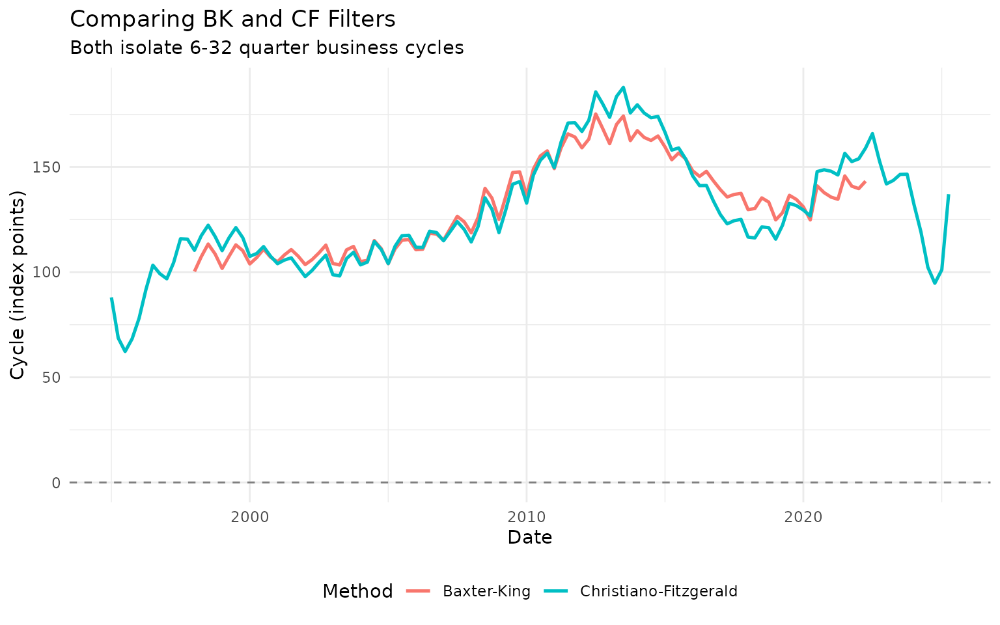
The CF filter produces similar results to BK but uses more observations (fewer NAs at the edges).
Choosing Band Parameters
The band parameter c(low, high) defines the cycle period
range:
For quarterly data: - Standard business cycles:
c(6, 32) (1.5 to 8 years) - Short cycles:
c(4, 12) (1 to 3 years) - Long cycles:
c(8, 40) (2 to 10 years)
For monthly data: - Standard business cycles:
c(18, 96) (1.5 to 8 years) - Short cycles:
c(12, 36) (1 to 3 years)
# Try different frequency bands on monthly vehicle data
vehicles_recent <- vehicles |>
slice_tail(n = 120)
# Short cycles (1-2 years)
vehicles_short <- vehicles_recent |>
augment_trends(value_col = "vehicles", methods = "cf", band = c(12, 24)) |>
select(date, vehicles, cycle_short = trend_cf)
# Medium cycles (1.5-4 years)
vehicles_medium <- vehicles_recent |>
augment_trends(value_col = "vehicles", methods = "cf", band = c(18, 48)) |>
select(cycle_medium = trend_cf)
# Combine
vehicles_bands <- bind_cols(vehicles_short, vehicles_medium) |>
select(date, cycle_short, cycle_medium) |>
pivot_longer(cols = starts_with("cycle"), names_to = "band", values_to = "cycle") |>
mutate(
band = case_when(
band == "cycle_short" ~ "Short (12-24 months)",
band == "cycle_medium" ~ "Medium (18-48 months)"
)
)
vehicles_bands |>
filter(!is.na(cycle)) |>
ggplot(aes(x = date, y = cycle, color = band)) +
geom_hline(yintercept = 0, linetype = "dashed", color = "gray50") +
geom_line(linewidth = 0.9) +
labs(
title = "CF Filter with Different Frequency Bands",
subtitle = "Vehicle production - different cycle definitions",
x = "Date",
y = "Cycle",
color = "Frequency Band"
) +
theme_minimal() +
theme(legend.position = "bottom")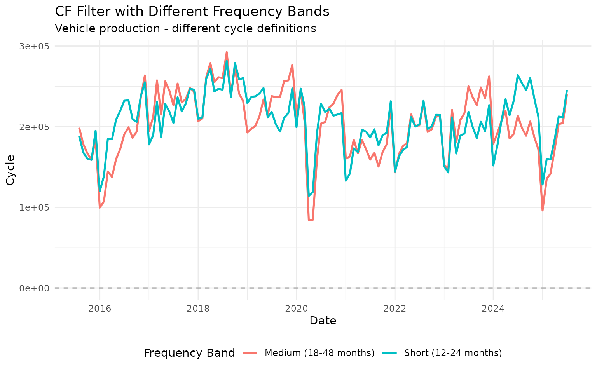
Different frequency bands highlight different cyclical patterns in the data.
The Hamilton Filter: A Modern Alternative
James Hamilton (2018) proposed an alternative to the HP filter based on regression. It avoids some statistical issues with the HP filter and is gaining popularity.
# Apply Hamilton filter to quarterly GDP
gdp_hamilton <- gdp_construction |>
augment_trends(
value_col = "gdp_construction",
methods = "hamilton"
) |>
mutate(cycle_hamilton = gdp_construction - trend_hamilton)
# Compare HP and Hamilton
comparison_hp_ham <- bind_rows(
gdp_hp |>
select(date, cycle) |>
mutate(method = "HP Filter"),
gdp_hamilton |>
select(date, cycle = cycle_hamilton) |>
mutate(method = "Hamilton Filter")
)
comparison_hp_ham |>
filter(!is.na(cycle)) |>
ggplot(aes(x = date, y = cycle, color = method)) +
geom_hline(yintercept = 0, linetype = "dashed", color = "gray50") +
geom_line(linewidth = 0.9) +
labs(
title = "HP Filter vs Hamilton Filter",
subtitle = "Both estimate business cycle deviations",
x = "Date",
y = "Cycle (output gap)",
color = "Method"
) +
theme_minimal() +
theme(legend.position = "bottom")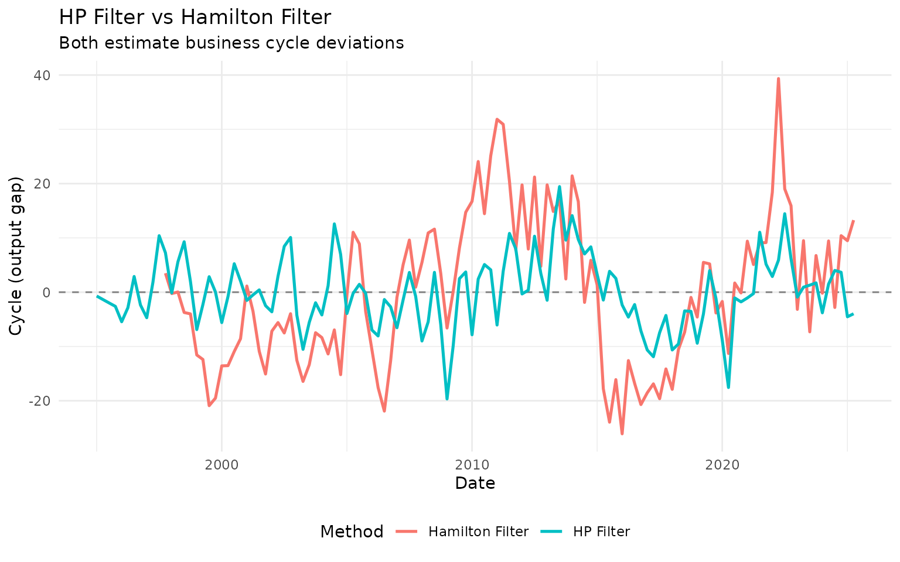
The Hamilton filter often produces similar results to HP but can differ at turning points and at the end of the sample.
Practical Business Cycle Analysis
Example 1: Identifying Recessions
Economic filters help identify recessions - periods when the economy operates below its trend:
# Use HP filter cycle to identify recession periods
ibcbr_cycles <- ibcbr |>
slice_tail(n = 120) |>
augment_trends(value_col = "ibcbr", methods = "hp") |>
mutate(
cycle = ibcbr - trend_hp,
is_recession = cycle < 0 # Below trend
)
# Plot with recession shading
ibcbr_cycles |>
ggplot(aes(x = date, y = cycle)) +
geom_hline(yintercept = 0, linetype = "dashed", color = "gray50") +
geom_ribbon(
data = filter(ibcbr_cycles, is_recession),
aes(ymin = -Inf, ymax = Inf),
alpha = 0.2,
fill = "gray70"
) +
geom_line(linewidth = 0.9, color = "#0072B2") +
labs(
title = "IBC-Br Business Cycles and Recessions",
subtitle = "Gray shading indicates periods below trend",
x = "Date",
y = "Output Gap (index points)"
) +
theme_minimal()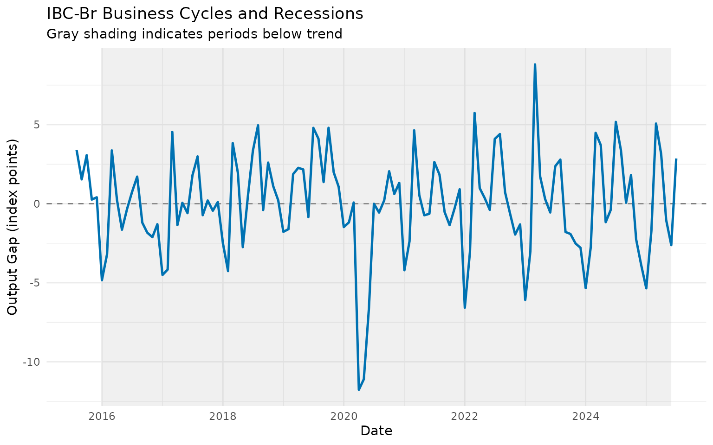
Example 2: Output Gap Analysis
The output gap (cycle component) is crucial for monetary policy decisions:
# Calculate output gap as percentage of trend
ibcbr_gap <- ibcbr |>
slice_tail(n = 120) |>
augment_trends(value_col = "ibcbr", methods = "hp") |>
mutate(
gap_pct = ((ibcbr - trend_hp) / trend_hp) * 100
)
# Plot output gap
ibcbr_gap |>
ggplot(aes(x = date, y = gap_pct)) +
geom_hline(yintercept = 0, linetype = "dashed", color = "gray50") +
geom_hline(yintercept = c(-2, 2), linetype = "dotted", color = "gray60", alpha = 0.7) +
geom_line(linewidth = 0.9, color = "#0072B2") +
geom_ribbon(aes(ymin = pmin(gap_pct, 0), ymax = 0), alpha = 0.3, fill = "#D55E00") +
geom_ribbon(aes(ymin = 0, ymax = pmax(gap_pct, 0)), alpha = 0.3, fill = "#009E73") +
labs(
title = "Output Gap: Economic Activity vs Trend",
subtitle = "Gap as percentage of trend (dotted lines = ±2%)",
x = "Date",
y = "Gap (%)"
) +
theme_minimal()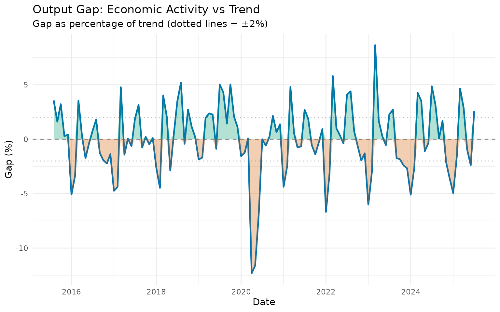
Positive gaps (green) suggest the economy is “overheating,” while negative gaps (red) indicate slack capacity.
Example 3: Comparing Multiple Indicators
Let’s compare business cycles across different sectors:
# Get recent data for multiple series
recent_gdp <- gdp_construction |>
slice_tail(n = 40) |>
augment_trends(value_col = "gdp_construction", methods = "hp") |>
mutate(
cycle = ((gdp_construction - trend_hp) / trend_hp) * 100,
indicator = "GDP Construction"
) |>
select(date, indicator, cycle)
recent_vehicles <- vehicles |>
slice_tail(n = 120) |>
augment_trends(value_col = "vehicles", methods = "hp") |>
mutate(
cycle = ((vehicles - trend_hp) / trend_hp) * 100,
indicator = "Vehicle Production"
) |>
select(date, indicator, cycle)
recent_activity <- ibcbr |>
slice_tail(n = 120) |>
augment_trends(value_col = "ibcbr", methods = "hp") |>
mutate(
cycle = ((ibcbr - trend_hp) / trend_hp) * 100,
indicator = "Economic Activity"
) |>
select(date, indicator, cycle)
# Combine and plot
bind_rows(recent_gdp, recent_vehicles, recent_activity) |>
ggplot(aes(x = date, y = cycle, color = indicator)) +
geom_hline(yintercept = 0, linetype = "dashed", color = "gray50") +
geom_line(linewidth = 0.9) +
labs(
title = "Business Cycles Across Economic Sectors",
subtitle = "All series show output gaps as % of HP trend",
x = "Date",
y = "Output Gap (%)",
color = "Indicator"
) +
theme_minimal() +
theme(legend.position = "bottom")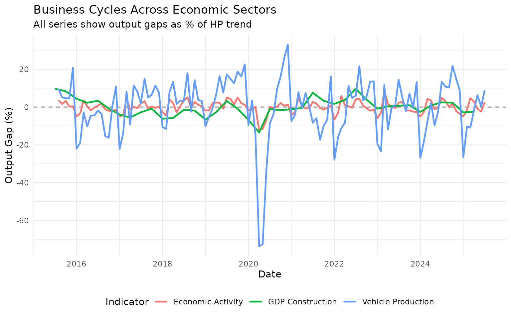
This reveals which sectors are more or less cyclical and whether they move together.
Choosing the Right Economic Filter
Here’s a practical decision guide:
Basic Questions
-
Need a standard, widely-accepted method?
- → Use HP filter (λ=1600 for quarterly, λ=14400 for monthly)
-
Want to isolate specific business cycle
frequencies?
- → Use BK or CF filter with band = c(6, 32) for quarterly or c(18, 96) for monthly
-
Concerned about end-point problems with HP?
- → Try Hamilton filter
-
Need values at the edges of your sample?
- → Use HP or Hamilton (avoid BK which loses observations)
-
Following recent economic research?
- → Consider Hamilton filter (but HP is still standard)
Method Comparison
| Method | Trend | Cycle | Edge Behavior | Best For |
|---|---|---|---|---|
| HP | ✓ | ✓ | Good | General business cycle analysis |
| BK | - | ✓ | Loses observations | Isolating specific frequencies |
| CF | - | ✓ | Better than BK | Business cycle isolation |
| Hamilton | ✓ | ✓ | Good | Modern alternative to HP |
Parameter Quick Reference
HP Filter:
# Quarterly data (standard)
data |> augment_trends(value_col = "value", methods = "hp", smoothing = 1600)
# Monthly data (standard)
data |> augment_trends(value_col = "value", methods = "hp", smoothing = 14400)
# More flexible trend (lower lambda)
data |> augment_trends(value_col = "value", methods = "hp", smoothing = 400)
# Smoother trend (higher lambda)
data |> augment_trends(value_col = "value", methods = "hp", smoothing = 6400)Bandpass Filters:
# Quarterly: standard business cycles
data |> augment_trends(value_col = "value", methods = "bk", band = c(6, 32))
data |> augment_trends(value_col = "value", methods = "cf", band = c(6, 32))
# Monthly: standard business cycles
data |> augment_trends(value_col = "value", methods = "cf", band = c(18, 96))Hamilton Filter:
# Default parameters work well for most cases
data |> augment_trends(value_col = "value", methods = "hamilton")Common Issues and Solutions
Issue 1: Trend too smooth or too wiggly
Problem: HP filter trend doesn’t look right Solution: Adjust lambda - increase for smoother, decrease for more flexible
Issue 2: Missing values at edges (BK filter)
Problem: BK filter returns many NAs Solution: Use CF filter instead, or accept the loss of observations
Summary
Economic filters are powerful tools for business cycle analysis:
- HP filter: Use as default for trend-cycle decomposition (λ=1600 quarterly, λ=14400 monthly)
- BK/CF filters: Use when you need to isolate specific business cycle frequencies
- Hamilton filter: Consider as modern alternative to HP
Key insights: - The output gap (cycle) measures how far the economy is from its trend - Negative gaps indicate recession/slack, positive gaps indicate overheating - Different sectors can have different cyclical patterns - No method is perfect - use economic judgment alongside statistical tools
Further Reading
- For general introduction: See “Getting Started” vignette
- For moving averages: See “Moving Averages” vignette
- For advanced decomposition: See “Advanced Methods” vignette on STL and Kalman filters
References
- Hodrick, R. J., & Prescott, E. C. (1997). Postwar U.S. business cycles: An empirical investigation. Journal of Money, Credit and Banking, 1-16.
- Baxter, M., & King, R. G. (1999). Measuring business cycles: Approximate band-pass filters. Review of Economics and Statistics, 81(4), 575-593.
- Christiano, L. J., & Fitzgerald, T. J. (2003). The band pass filter. International Economic Review, 44(2), 435-465.
- Hamilton, J. D. (2018). Why you should never use the Hodrick-Prescott filter. Review of Economics and Statistics, 100(5), 831-843.